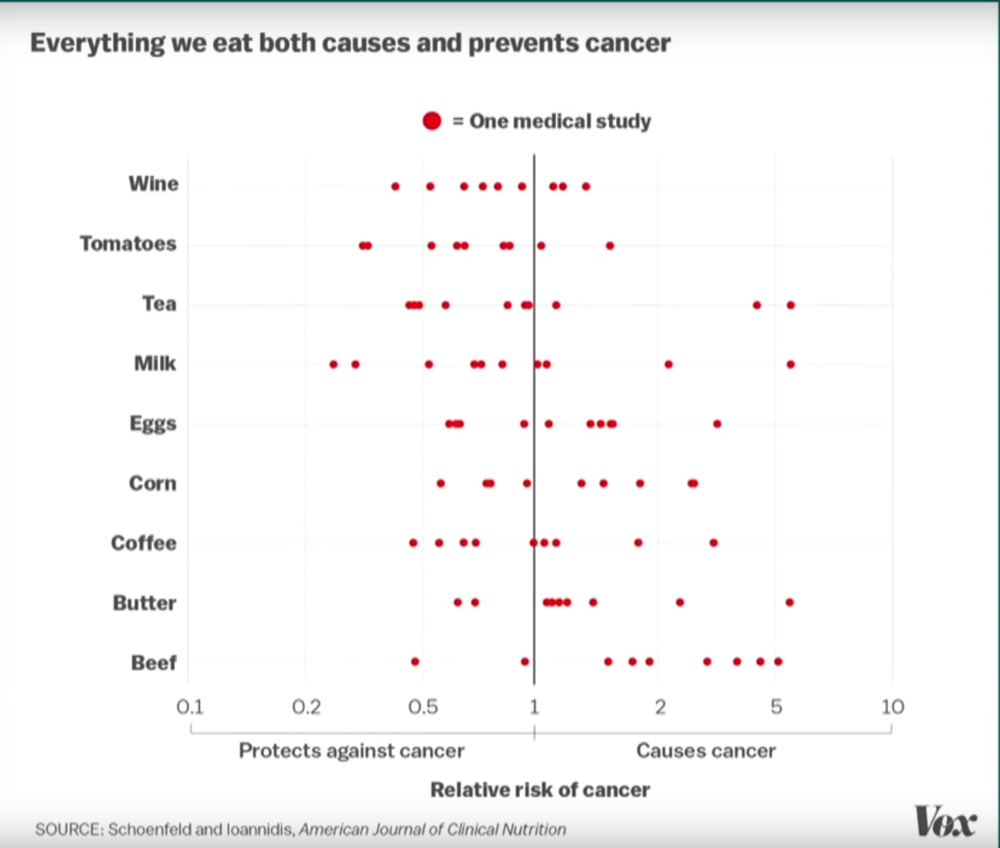
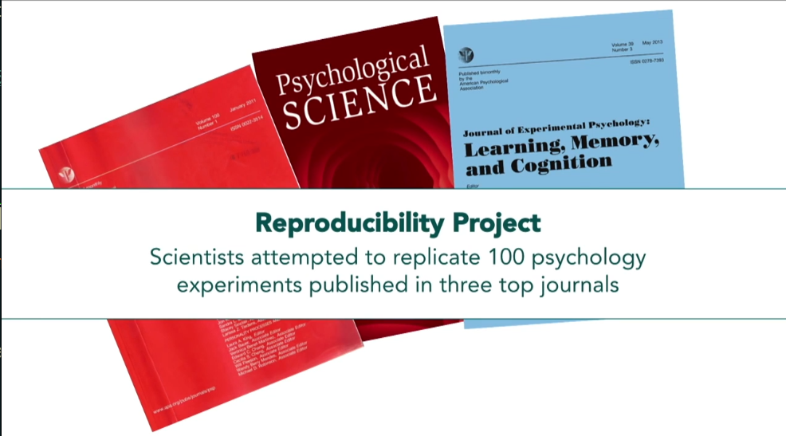

MBG1032 Biyoistatistik - Doç.Dr. Alper YILMAZ
“Yayınlanan bilimsel çalışmaların çoğu yanlış.”
Bu derste iki video izleyeceğiz ve istatistiğin bilimde nasıl yanlış kullanılabileceğini — ve bunun nasıl düzeltilebileceğini — tartışacağız.
Is Most Published Research Wrong?: Veritasium kanalının bu videosu, yayınlanan araştırmaların neden güvenilmez olabileceğini anlatıyor.
Bilim insanları bir sonucun “anlamlı” olup olmadığına p-değeri ile karar veriyor.
Bir alanda 1.000 hipotez test edildiğini düşünelim. Bunların sadece %10’u (100 tanesi) gerçekten doğru olsun:
Doğru hipotezler (100): İstatistiksel güç %80 ise → 80 tanesi doğru şekilde bulunur, 20 tanesi kaçırılır (Tip II hata)
Yanlış hipotezler (900): α = 0.05 ise → 900 × 0.05 = 45 tanesi yanlışlıkla “anlamlı” çıkar (Tip I hata)
Yayınlanan sonuçlar: 80 gerçek + 45 yanlış pozitif = 125 çalışma
\[ \text{Yanlış sonuç oranı} = \frac{45}{125} = \%36 \]
Yani her şey düzgün çalışsa bile, yayınlanan sonuçların yaklaşık üçte biri yanlış.
Gerçek dünyada istatistiksel güç genellikle %20-40 arasında — bu durumda oran çok daha kötü.
Gerçek dünyada istatistiksel güç ortalama olarak %30 ise, bir önceki slaytta yapılan Yanlış Sonuç Oranı’nı tekrar hesaplayın.
2015’te bir gazeteci, p-hacking’in ne kadar kolay olduğunu göstermek için sahte bir çalışma yayınladı: “Bitter çikolata kilo verdirir.”
Araştırmacı p < 0.05 bulana kadar veriyi farklı şekillerde analiz eder:
Bunların çoğu bilinçli yapılmaz — araştırmacı “doğru” analizi aradığını düşünür ama aslında Tip I hata oranını kontrol edilemez şekilde artırır.
Bir araştırmacı “insanların geleceği hissedebileceğini” gösteren istatistiksel olarak anlamlı sonuçlar yayınladı. Metodolojik olarak sorunsuz görünüyordu.
Ama bir başka ekip aynı deneyi tekrarladığında sonucu doğrulayamadı. Tekrarlama çalışmasını yayınlamak istediğinde, orijinal dergi bunu reddetti — çünkü dergiler tekrarlama çalışmalarına ilgi duymuyor.
Bu, sistemin nasıl bozuk çalıştığını gösteriyor: yanlış bir sonuç yayınlanıyor, düzeltme yayınlanamıyor.
“Siyahi futbolcular daha mı çok kırmızı kart görüyor?” sorusu 29 farklı araştırma grubuna soruldu. Hepsi aynı veriyi kullandı:
Araştırmacının seçtiği istatistiksel yöntem, kontrol değişkenleri ve modelleme kararları sonucu tamamen değiştirebiliyor.
Bilim kendi kendini düzeltmeli ama sistemin teşvikleri buna karşı çalışıyor:
Son yıllarda bilim camiası bu sorunları çözmek için önemli adımlar atıyor:
Bilimsel yöntem matematiksel olarak kusurlu ve insan yanlılığına açık — ama yine de gerçeğe ulaşmak için elimizdeki en güvenilir araç.
20 grup oluşturalım (hepsi aynı dağılımdan, aralarında hiçbir fark yok) ve t.test ile karşılaştıralım:
190 t-testi yaptığınızda, hiçbir gerçek fark olmasa bile beklenen yanlış pozitif sayısı:
\[ 190 \times 0.05 = 9.5 \text{ "anlamlı" sonuç} \]
Araştırmacı bu 9-10 “anlamlı” sonuçtan birini seçip yayınlarsa → p-hacking.
Çözüm: Çoklu test düzeltmesi
Bilimde tekrarlanabilirlik sorunu geniş çaplı çalışmalarla belgelenmiştir:
| Alan | Çalışma | Tekrarlanan | Oran |
|---|---|---|---|
| Psikoloji | 100 çalışma | 39 | %39 |
| Kanser biyolojisi | 53 çalışma | 6 | %11 |
| İlaç keşfi (Bayer) | 67 proje | 14 | %21 |
| Ekonomi | 18 çalışma | 11 | %61 |
Bu bir “bilim bozuk” demek değil — bilimin kendi kendini düzeltme mekanizmasının çalıştığını gösteriyor. Ama sorunun farkında olmamız gerekiyor.
“A New Study Shows…”: Laura Arnold’ın TED konuşması, medyanın bilimsel çalışmaları nasıl yanlış aktardığını ve “yeni bir çalışmaya göre…” cümlesinin neden tehlikeli olduğunu anlatıyor.
1. Power posing çalışması
Amy Cuddy’nin ünlü “güç pozu” çalışması: 2 dakika güç pozu yapmak testosteron artırır ve stres azaltır. Milyonlarca kez izlendi — ama tekrar çalışmalarında sonuçlar doğrulanamadı. Orijinal çalışmanın yazarlarından biri bile çalışmayı reddettiğini açıkladı.
2. Beslenme çalışmalarının sorunları
3. File drawer effect (çekmece etkisi)
Negatif sonuçlar (p > 0.05) yayınlanmaz. Yayınlanan literatür sadece “pozitif” sonuçları gösterir → gerçekliğin çarpıtılmış bir resmi.
10 grup aynı ilacı test eder → 1 grupta tesadüfen p < 0.05 çıkar → sadece o yayınlanır → “ilaç etkili” görünür.


Bireysel araştırmacı olarak:
Okuyucu / tüketici olarak:
Makaleler:
Videolar ve interaktif kaynaklar:
Bu dersin bağlantıları: